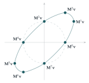

A \(2 \times 2\) matrix \(\mathbf{M}\) is real if it can be written as \(\mathbf{M} = \begin{pmatrix} a & b \\ c & d \end{pmatrix}\), where \(a\), \(b\), \(c\) and \(d\) are real. In this case, the trace of matrix \(\mathbf{M}\) is defined to be \(\operatorname{tr}(\mathbf{M}) = a + d\) and \(\det(\mathbf{M})\) is the determinant of matrix \(\mathbf{M}\). In this question, \(\mathbf{M}\) is a real \(2 \times 2\) matrix.
Prove that \[\operatorname{tr}(\mathbf{M}^2) = \operatorname{tr}(\mathbf{M})^2 - 2\det(\mathbf{M}).\]
Prove that \[\mathbf{M}^2 = \mathbf{I} \text{ but } \mathbf{M} \neq \pm\mathbf{I} \iff \operatorname{tr}(\mathbf{M}) = 0 \text{ and } \det(\mathbf{M}) = -1,\] and that \[\mathbf{M}^2 = -\mathbf{I} \iff \operatorname{tr}(\mathbf{M}) = 0 \text{ and } \det(\mathbf{M}) = 1.\]
Use part (ii) to prove that \[\mathbf{M}^4 = \mathbf{I} \iff \mathbf{M}^2 = \pm\mathbf{I}.\] Find a necessary and sufficient condition on \(\det(\mathbf{M})\) and \(\operatorname{tr}(\mathbf{M})\) so that \(\mathbf{M}^4 = -\mathbf{I}\).
Give an example of a matrix \(\mathbf{M}\) for which \(\mathbf{M}^8 = \mathbf{I}\), but which does not represent a rotation or reflection. [Note that the matrices \(\pm\mathbf{I}\) are both rotations.]
The hook
Some transformations, repeated enough times, bring everything back to where it started. A rotation by \(90^\circ\) does it in four steps, a reflection in two. Which \(2 \times 2\) matrices have this property, \(\mathbf{M}^n = \mathbf{I}\) for some \(n\), and how can you tell?
The surprise of this question is that two numbers, the trace and the determinant, are enough to decide. You do not need to know the four entries, only \(a + d\) and \(ad - bc\). And the answer has a striking consequence for the physical world: it explains why crystals can have \(2\)-, \(3\)-, \(4\)- and \(6\)-fold symmetry but never \(5\)-fold, a “law” of crystallography that held for two centuries until a discovery in 1982 won a Nobel Prize.
Before you start
Every \(2 \times 2\) matrix satisfies \(\mathbf{M}^2 - (\operatorname{tr}\mathbf{M})\mathbf{M} + (\det\mathbf{M})\mathbf{I} = \mathbf{0}\) (the Cayley–Hamilton theorem; check it by multiplying out). How could that help with questions about \(\mathbf{M}^2\)?
It expresses \(\mathbf{M}^2\) in terms of \(\mathbf{M}\) and \(\mathbf{I}\): \(\mathbf{M}^2 = t\mathbf{M} - d\mathbf{I}\), where \(t = \operatorname{tr}\mathbf{M}\) and \(d = \det\mathbf{M}\). So a condition on \(\mathbf{M}^2\) becomes a condition linking \(\mathbf{M}\), \(t\) and \(d\). That is the key to the whole question.
Working it through
Stage 1 The trace of the square
\(\mathbf{M}^2 = \begin{pmatrix} a^2 + bc & ab + bd \\ ac + cd & bc + d^2 \end{pmatrix}\), so \(\operatorname{tr}(\mathbf{M}^2) = a^2 + 2bc + d^2 = (a + d)^2 - 2(ad - bc)\).■
Stage 2 Square roots of \(\pm\mathbf{I}\)
Suppose \(\mathbf{M}^2 = \mathbf{I}\). Substitute into \(\mathbf{M}^2 = t\mathbf{M} - d\mathbf{I}\). If \(t \neq 0\), what does that say about \(\mathbf{M}\)?
If \(\mathbf{M}^2 = \mathbf{I}\), then \(\mathbf{I} = t\mathbf{M} - d\mathbf{I}\), so \(t\mathbf{M} = (1 + d)\mathbf{I}\). If \(t \neq 0\), then \(\mathbf{M}\) is a multiple of \(\mathbf{I}\), say \(c\mathbf{I}\), and \(c^2 = 1\), so \(\mathbf{M} = \pm\mathbf{I}\), which is excluded. Hence \(t = 0\), and then \((1 + d)\mathbf{I} = \mathbf{0}\), so \(d = -1\).
Conversely, if \(t = 0\) and \(d = -1\), then \(\mathbf{M}^2 = t\mathbf{M} - d\mathbf{I} = \mathbf{I}\), and \(\mathbf{M} \neq \pm\mathbf{I}\) because \(\operatorname{tr}(\pm\mathbf{I}) = \pm2 \neq 0\).■
For \(\mathbf{M}^2 = -\mathbf{I}\): substituting gives \(t\mathbf{M} = (d - 1)\mathbf{I}\). If \(t \neq 0\) then \(\mathbf{M} = c\mathbf{I}\) with \(c^2 = -1\), impossible for real \(c\). So \(t = 0\) and \(d = 1\). Conversely, \(t = 0\) and \(d = 1\) give \(\mathbf{M}^2 = -\mathbf{I}\).■
Stage 3 Fourth roots
Let \(\mathbf{N} = \mathbf{M}^2\), so \(\mathbf{M}^4 = \mathbf{I}\) means \(\mathbf{N}^2 = \mathbf{I}\). By part (ii), either \(\mathbf{N} = \pm\mathbf{I}\) or \(\operatorname{tr}\mathbf{N} = 0\) and \(\det\mathbf{N} = -1\). Why is the second case impossible?
\(\det\mathbf{N} = \det(\mathbf{M}^2) = (\det\mathbf{M})^2 \geq 0\), so \(\det\mathbf{N} \neq -1\). Hence \(\mathbf{N} = \mathbf{M}^2 = \pm\mathbf{I}\). The converse is clear.■
For \(\mathbf{M}^4 = -\mathbf{I}\): by part (ii) applied to \(\mathbf{N} = \mathbf{M}^2\), this holds exactly when \(\operatorname{tr}(\mathbf{M}^2) = 0\) and \(\det(\mathbf{M}^2) = 1\), that is, \(t^2 - 2d = 0\) and \(d^2 = 1\). Since \(t^2 = 2d \geq 0\), we need \(d = 1\), and then \(t^2 = 2\). So \[\mathbf{M}^4 = -\mathbf{I} \iff \det\mathbf{M} = 1 \text{ and } \operatorname{tr}\mathbf{M} = \pm\sqrt2. \qed\]
Stage 4 An eighth root of \(\mathbf{I}\) that is not a rotation
Any matrix with \(\mathbf{M}^4 = -\mathbf{I}\) has \(\mathbf{M}^8 = \mathbf{I}\). A rotation by \(45^\circ\) has trace \(\sqrt2\) and determinant \(1\); we want another matrix with the same trace and determinant that is not a rotation. Take \[\mathbf{M} = \begin{pmatrix} \sqrt2 & -1 \\ 1 & 0 \end{pmatrix}, \qquad \operatorname{tr}\mathbf{M} = \sqrt2, \quad \det\mathbf{M} = 1.\] By Stage 3, \(\mathbf{M}^4 = -\mathbf{I}\), so \(\mathbf{M}^8 = \mathbf{I}\). But \(\mathbf{M}\) is not a rotation or reflection, because those preserve lengths, and \(\mathbf{M}\begin{pmatrix} 1 \\ 0 \end{pmatrix} = \begin{pmatrix} \sqrt2 \\ 1 \end{pmatrix}\) has length \(\sqrt3 \neq 1\).■

Looking back
Cayley–Hamilton turns powers into linear combinations. Every power of a \(2 \times 2\) matrix is a combination of \(\mathbf{M}\) and \(\mathbf{I}\), with coefficients depending only on trace and determinant.
Determinants of squares are non-negative. That simple fact ruled out a whole case in part (iii).
Trace and determinant are invariants. Two matrices with the same trace and determinant (and not multiples of \(\mathbf{I}\)) behave alike under powers, whether or not they look alike.
What’s really going on
Why is \(\mathbf{M}\) in Stage 4 “a rotation in disguise”? Two matrices \(\mathbf{M}\) and \(\mathbf{R}\) are similar if \(\mathbf{M} = \mathbf{SRS}^{-1}\) for some invertible \(\mathbf{S}\): they represent the same transformation in different coordinates. Similar matrices have the same trace and determinant, and (for \(2 \times 2\) matrices that are not multiples of \(\mathbf{I}\)) the converse holds too. So any real matrix with trace \(\sqrt2\) and determinant \(1\) is similar to the rotation by \(45^\circ\), and in the skewed coordinates given by \(\mathbf{S}\) it simply rotates (Figure 7.4.1). In general, a real \(2 \times 2\) matrix with \(\mathbf{M}^n = \mathbf{I}\) is always similar to a rotation or a reflection.
Why crystals have no five-fold symmetry
A crystal is a regular, repeating arrangement of atoms. A rotational symmetry of the crystal sends the lattice of atoms to itself, so in coordinates based on the lattice it is given by a matrix with integer entries. Its trace is therefore an integer. But a rotation by angle \(\theta\) has trace \(2\cos\theta\) in any coordinates, and \(2\cos\theta\) is an integer only when it is \(-2, -1, 0, 1\) or \(2\), that is, for rotations of order \(2\), \(3\), \(4\) and \(6\) (and \(1\)). Five-fold symmetry would need \(2\cos72^\circ = \frac{\sqrt5 - 1}{2}\), which is not an integer. This is the crystallographic restriction theorem. In 1982 Dan Shechtman observed an alloy with apparent five-fold symmetry and was at first ridiculed; it turned out to be a quasicrystal, ordered but not periodic, like the Penrose tilings, and so not covered by the theorem. He received the Nobel Prize in Chemistry in 2011.
The thinking skill
When a question is about an object with many parameters, ask whether a few combinations of them, invariant under a change of viewpoint, are enough.
Here four entries reduced to two invariants, the trace and the determinant, because the question (“does \(\mathbf{M}^n = \mathbf{I}\)?”) does not depend on the coordinates. Finding the right invariants is often the key to classification problems.
Try this next
Rotations of order three. (From STEP II, 2021.) The matrix \(\mathbf{R}\) represents an anticlockwise rotation through angle \(\phi\), and \(\mathbf{R} + \mathbf{I}\) also represents a rotation. Find the possible values of \(\phi\) and deduce that \(\mathbf{R}^3 = \mathbf{I}\). Then show that if \(\mathbf{S}\) is a real matrix with \(\mathbf{S}^3 = \mathbf{I}\) but \(\mathbf{S} \neq \mathbf{I}\), then \(\det\mathbf{S} = 1\) and \(\operatorname{tr}\mathbf{S} = -1\).
Order six. Find a condition on the trace and determinant for \(\mathbf{M}^6 = \mathbf{I}\) but \(\mathbf{M}^2 \neq \mathbf{I}\) and \(\mathbf{M}^3 \neq \mathbf{I}\).
The crystallographic restriction. Show that if \(\mathbf{M}\) has integer entries, \(\det\mathbf{M} = 1\) and \(\mathbf{M}^n = \mathbf{I}\) for some \(n\), then \(\operatorname{tr}\mathbf{M} \in \{-2, -1, 0, 1, 2\}\). Find an integer matrix of order \(6\).
Cayley–Hamilton for powers. Use \(\mathbf{M}^2 = t\mathbf{M} - d\mathbf{I}\) to express \(\mathbf{M}^3\) and \(\mathbf{M}^4\) in the form \(p\mathbf{M} + q\mathbf{I}\), and use this to rederive the condition for \(\mathbf{M}^4 = -\mathbf{I}\).
Further reading
M. A. Armstrong, Groups and Symmetry (Springer). Includes the crystallographic restriction and the classification of wallpaper patterns.
Marjorie Senechal, Quasicrystals and Geometry (Cambridge University Press). The mathematics of quasicrystals and aperiodic order.
Gilbert Strang, Introduction to Linear Algebra (Wellesley-Cambridge). Similar matrices and the Cayley–Hamilton theorem.